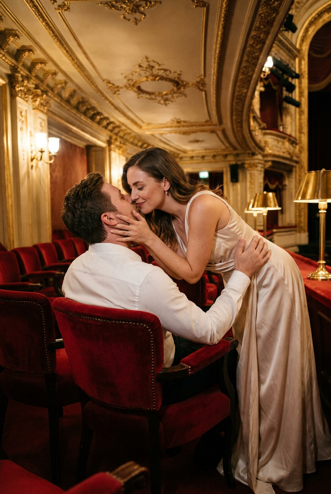
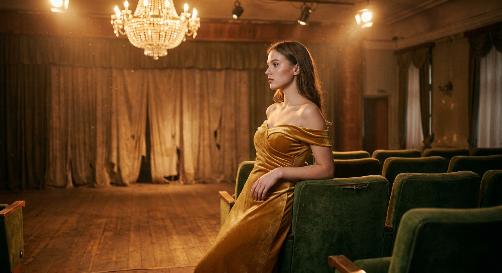
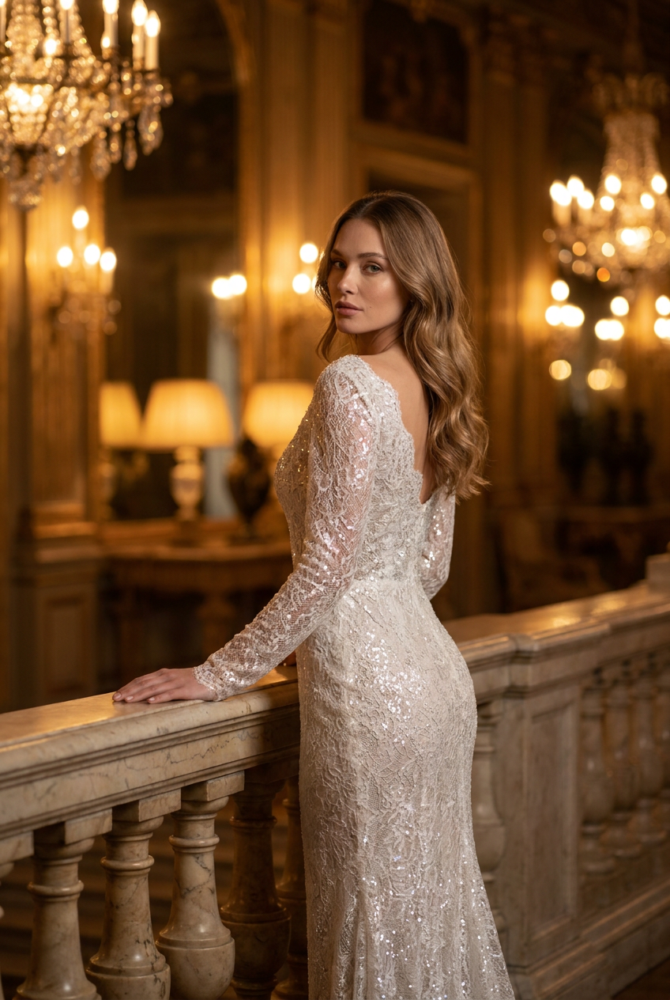
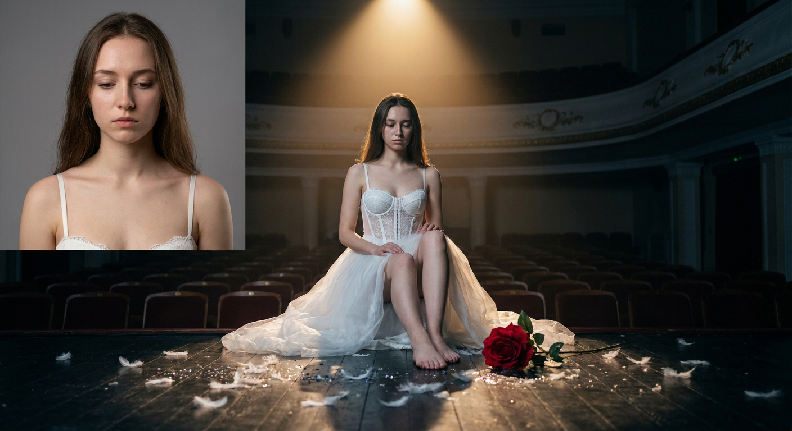
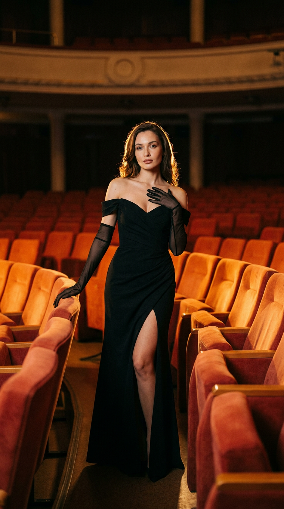
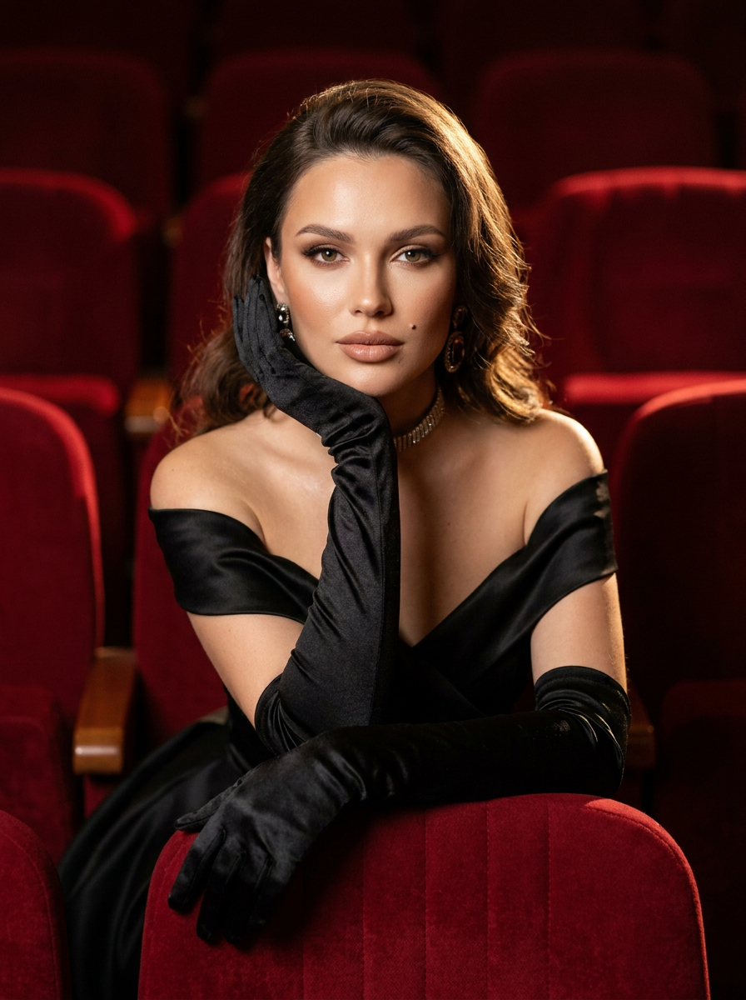
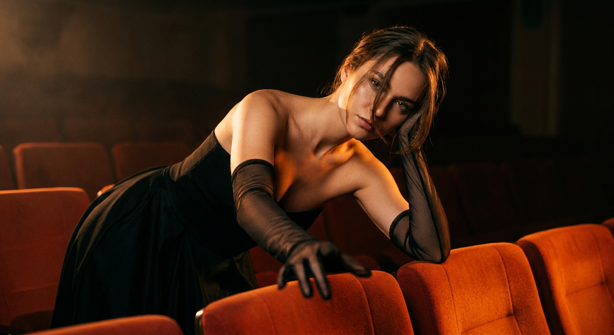
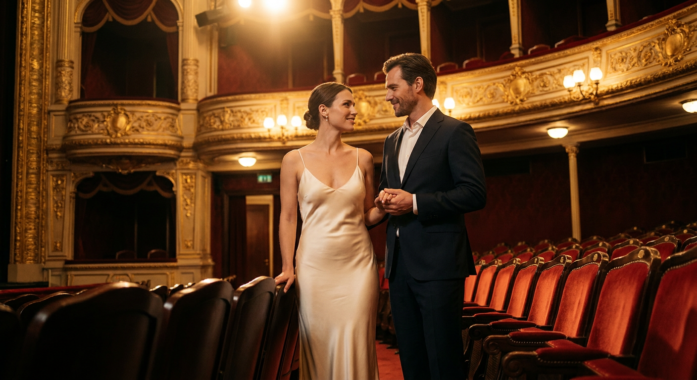
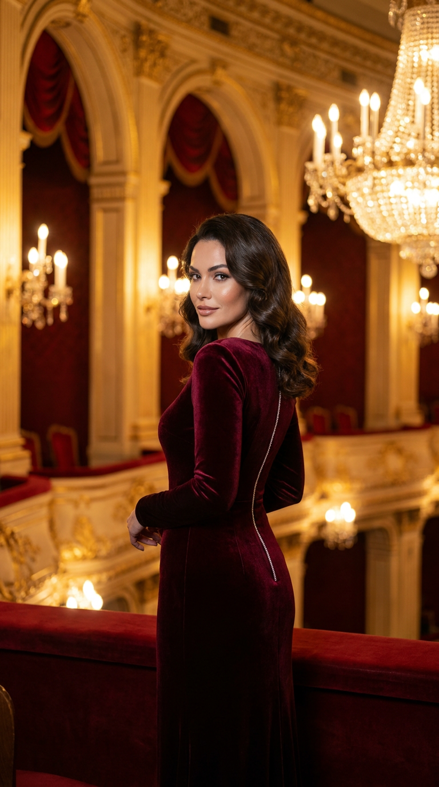
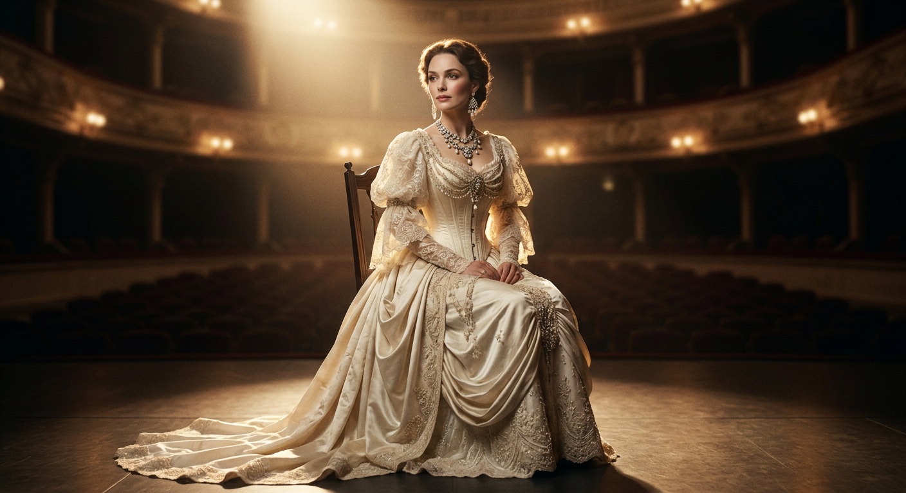

ИИ-фото в театре: 10 промптов для нейросети

Обычный портрет быстро теряется среди одинаковых фонов и случайного света. Генерация помогает превратить снимок в сцену из старого театра — с бархатными креслами, софитами, позолотой и выразительной историей.
Внутри — 10 готовых сценариев: от романтического поцелуя в зрительном зале до одиночного портрета на сцене. Здесь есть идеи для fashion-редакционной съёмки, оперной эстетики, камерной драмы и роскошного вечернего образа.
Как сгенерировать такое фото: пошагово
Нужен снимок анфас при ровном свете, лицо в кадре целиком, без тёмных очков и головных уборов. Разрешение от 1000 пикселей по короткой стороне. Чем чётче исходник, тем точнее модель повторит черты.
Выберите сценарий ниже и нажмите «Копировать» — текст уйдёт в буфер целиком, вместе с командой сохранения внешности. Эта команда стоит первой строкой и отвечает за то, чтобы на выходе было ваше лицо, а не случайное.
Кнопка «Сгенерировать» рядом с каждым промптом открывает модель в новой вкладке. Nano Banana Pro работает с референсом лица — в отличие от моделей, которые генерируют портрет с нуля и узнаваемость теряют.
Промпт — в поле ввода, портрет — через загрузку референса. Порядок значения не имеет, но без референса команда сохранения внешности работать не будет: модели нечего сохранять.
Для сторис и ленты берите 9:16, для превью и обложек — 4:3. Первый результат редко идеален: если поза или свет ушли не туда, поправьте соответствующую часть промпта и запустите заново. Обычно хватает двух-трёх итераций.
10 промптов для генерации
1. Поцелуй среди кресел
Строго сохранить внешность по загруженному референсу: черты лица, пропорции, мимику и текстуру кожи без изменений. Фотореалистичная романтическая fashion-сцена в старинном театре. Вокруг — ряды глубоких красных бархатных кресел, роскошная позолоченная лепнина, декоративный потолок и мягкое тёплое театральное освещение. Женщина в длинном светлом вечернем платье из сатина или шёлка: ткань облегает фигуру, лежит естественными складками и слегка блестит. Она наклоняется к мужчине, сидящему в кресле, и целует его в губы. Одной рукой женщина нежно касается его щеки или подбородка, второй опирается на спинку кресла либо подлокотник. Мужчина в белой рубашке расслабленно сидит среди красных кресел и немного поворачивается к ней. Поза естественная, без напряжения. Кинематографичная композиция, натуральные эмоции, реалистичная кожа, мягкая глубина резкости, дорогая журнальная съёмка.
2. Золотое платье в ложе

Строго сохранить внешность по загруженному референсу: черты лица, пропорции, мимику и текстуру кожи без изменений. Кинематографичный фотореалистичный портрет молодой женщины в пустом старом театре. На ней золотое бархатное платье с открытыми плечами, подчёркивающее силуэт. Она стоит у ряда зелёных бархатных кресел и слегка опирается на него. В кадре видны деревянный пол, потёртые театральные драпировки за сценой и большая хрустальная люстра над головой. Тёплый янтарный свет проходит через воздух, подсвечивая пылинки. Полный рост, ракурс три четверти, лицо обращено в профиль, поза элегантная и спокойная. Высокая детализация кожи, бархата, ткани и деревянных поверхностей, естественные светотени, малая глубина резкости, объектив 50 мм, f/1.8, мягкое боке, плёночная цветокоррекция и лёгкое зерно.
3. Портрет у балюстрады

Строго сохранить внешность по загруженному референсу: черты лица, пропорции, мимику и текстуру кожи без изменений. Роскошная фотореалистичная editorial-съёмка в интерьере старого grand hotel, дворца или исторического салона. Женщина стоит у мраморной балюстрады или изогнутого каменного ограждения в тёплой приглушённой атмосфере. Одна рука лежит на балюстраде, корпус развёрнут от камеры, а голова повернута через плечо назад. Вокруг — несколько хрустальных люстр, мягкие лампы, золотые отблески, зеркальные поверхности и благородный полумрак. На заднем плане мерцают огни, они растворяются в мягком боке. Интерьер должен выглядеть как европейский дворец или дорогой исторический отель: винтажно, утончённо, без избыточной резкости. Съёмка в стиле luxury high-fashion, выразительный взгляд через плечо, натуральная кожа, тонкая ретушь, кинематографичный тёплый свет.
4. Белое платье под софитом

Строго сохранить внешность по загруженному референсу: черты лица, пропорции, мимику и текстуру кожи без изменений. Фотореалистичная сцена в пустом театре: молодая женщина в воздушном белом платье с кружевным корсетом сидит в центре прохода, на самом краю сцены. Над ней работает один направленный софит. Взгляд опущен, поза задумчивая и немного хрупкая, ноги слегка согнуты. На полу разбросаны белые перья и блёстки, рядом лежит крупная красная роза. Использовать кинематографичный низкий угол съёмки, тёплый верхний свет и холодные тени вокруг. Мягкое боке, естественные цвета, высокая детализация кожи, кружева, ткани и пыльной фактуры сцены. Эффект дорогого драматического фотокадра, объектив 50 мм, f/1.8, мягкая зернистость, натуральная мимика, без чрезмерной ретуши.
5. Чёрное платье в проходе

Строго сохранить внешность по загруженному референсу: черты лица, пропорции, мимику и текстуру кожи без изменений. Фотореалистичная fashion-editorial съёмка в пустом театре или кинотеатре с рядами ярко-оранжевых и красно-терракотовых кресел. Женщина стоит в проходе по центру композиции. На ней чёрное вечернее платье в пол с облегающим силуэтом. Корпус слегка развёрнут, одна рука лежит на спинке кресла или подлокотнике, другая поднята к груди либо шее; пальцы расслаблены и выглядят естественно. Голова чуть наклонена, взгляд направлен в объектив или немного в сторону. Выражение спокойное, уверенное, чувственное, с лёгкой загадочностью. Ноги визуально вытянуты, поза напоминает обложку модного журнала. Вертикальная композиция, выразительные линии рядов, реалистичная кожа и ткань, мягкий театральный свет, дорогая журнальная стилистика, натуральные пропорции.
6. Перчатка и красный бархат

Строго сохранить внешность по загруженному референсу: черты лица, пропорции, мимику и текстуру кожи без изменений. Фотореалистичный high-fashion editorial-портрет в старом театре с рядами глубоких красных бархатных кресел. Женщина сидит среди зрительских мест, кадр построен как крупный или средний крупный план. Она слегка наклоняется вперёд: одна рука в длинной чёрной перчатке поддерживает подбородок или касается щеки, вторая непринуждённо лежит на спинке кресла. Поза изящная, задумчивая и чувственная, но без вульгарности. Взгляд направлен прямо в камеру или немного в сторону, выражение спокойное, уверенное и томное, с едва заметной загадкой. Красный бархат заполняет фон, создавая насыщенную театральную фактуру. Свет мягкий и дорогой, кожа натуральная, детали перчатки и кресел хорошо читаются, композиция напоминает глянцевую журнальную съёмку.
7. Интимный кадр у кресла

Строго сохранить внешность по загруженному референсу: черты лица, пропорции, мимику и текстуру кожи без изменений. Ночная fashion-editorial сцена в пустом театре с рядами красно-оранжевых кресел. Фон очень тёмный, почти растворённый в тени; основной акцент приходится на лицо и верхнюю часть тела женщины. Она сидит или наклоняется вперёд через спинку кресла. Корпус слегка повёрнут в сторону, голова сильно наклонена, взгляд направлен прямо в камеру — мягкий, томный, выразительный и уверенный. Одна рука вытянута на передний план, вторая поддерживает голову или шею. Пальцы расслаблены, поза естественная и изящная. Кадр должен передавать близость к зрителю, мягкую уязвимость и глянцевое настроение дорогой журнальной съёмки. Использовать направленный мягкий свет на лице, глубокие тени, малую глубину резкости, реалистичные текстуры кожи и ткани.
8. Взгляды в оперном театре

Строго сохранить внешность по загруженному референсу: черты лица, пропорции, мимику и текстуру кожи без изменений. Реалистичная фотография элегантной пары в роскошном оперном театре. Они стоят в проходе между рядами красных бархатных кресел и держатся за руки, обмениваясь тёплыми взглядами. На женщине кремовое шёлковое платье на тонких бретелях, мужчина одет в тёмный костюм. На заднем плане — позолоченные балконы, резной декор и мягкие театральные лампы. Золотой сценический свет сочетается с боковым контровым освещением, подчёркивающим фактуру ткани, кресел и лиц. Средний план, низкая точка съёмки, диагональные ряды кресел работают как ведущие линии. Естественная поза, натуральные оттенки кожи, тонкая ретушь, мягкая кинематографичная цветокоррекция, тёплая палитра, лёгкое зерно. Объектив 85 мм, f/1.8, shallow depth of field, medium full shot, камера уровня Hasselblad X2D II 100C.
9. Барокко и вечерний свет

Строго сохранить внешность по загруженному референсу: черты лица, пропорции, мимику и текстуру кожи без изменений. Вертикальная luxury editorial fashion-фотография в формате 9:16, действие происходит в роскошном старинном оперном театре. Богатый интерьер выполнен в эстетике барокко и рококо: огромные позолоченные арки, сложная лепнина, хрустальные люстры, театральные балконы и глубокие красные кресла. Главная героиня стоит в центре сцены или прохода, в её образе сочетаются вечерняя мода и аристократическая театральность. Волосы уложены профессионально: мягкие глянцевые волны, небольшой объём у корней, часть волос убрана от лица или собрана назад. Свет тёплый, золотистый, с мягким контровым сиянием от люстр. На фоне — кремовое боке, блеск металла и декоративные детали. Фотореалистичная кожа, точные пропорции, естественная мимика, высокая детализация ткани, вертикальная журнальная композиция.
10. Один стул на сцене

Строго сохранить внешность по загруженному референсу: черты лица, пропорции, мимику и текстуру кожи без изменений. Фотореалистичный кинематографичный fashion-портрет на сцене старинного театра, вдохновлённый винтажной оперной эстетикой. Женщина сидит на простом тёмном театральном стуле. Поза длинная, изящная и слегка драматичная, словно кадр из исторического фильма или съёмки высокой моды. Голова повёрнута в сторону источника света, взгляд спокойный, задумчивый и немного отстранённый. Выражение благородное, мягкое и уверенное, с аристократической сдержанностью. На ней роскошное бело-слоновое платье в духе викторианской, ар-деко и opera couture эстетики: приталенный корсетный верх, сложная фактура ткани, элегантный силуэт и деликатный блеск. Сцена затемнена, свет направлен сбоку, фон театральный и слегка размытый, натуральные цвета, высокая детализация ткани и кожи.
Что важно учесть в этом стиле
Театральный кадр держится на контрасте: роскошный интерьер работает фоном, а герой остаётся главным акцентом. Поэтому в промпте лучше отдельно описывать локацию, одежду, позу, направление взгляда и источник света. Если всё смешать в одно длинное перечисление, нейросеть может потерять ключевую деталь.
Для глянцевого результата помогают конкретные параметры: объектив 50 или 85 мм, открытая диафрагма f/1.8, малая глубина резкости и вертикальный формат 9:16. Для драматичной сцены добавляйте низкий угол, одиночный софит, холодные тени или направленный боковой свет.
Идеи для вариаций
- Заменить красные кресла на пустую ложу с зелёным бархатом.
- Добавить театральную маску, веер или длинные перчатки.
- Перенести сцену в гримёрку с зеркалами и лампами по контуру.
- Сделать съёмку чёрно-белой, оставив красной только розу.
- Попросить эффект дождя за открытыми дверями театра.
- Сменить вечернее платье на костюм актрисы в духе ар-деко.
Как собрать свой промпт
Начните с формата изображения и типа кадра: портрет, средний план, полный рост или editorial-съёмка 9:16. Затем задайте место действия — сцену, ложу, проход между креслами или пустой зрительный зал. После этого опишите одежду, позу, выражение лица и направление взгляда.
В финале добавьте свет и технику: тёплый софит, контровое освещение, холодные тени, 50 мм, f/1.8, мягкое боке. Если используете референс, отдельно укажите, какие черты и детали нужно сохранить. Генерируйте сериями по 4–8 вариантов и меняйте за один подход только одну переменную: позу, свет или одежду.
Ошибки, из-за которых кадр не получается
- Слишком много главных объектов. Люстры, кресла, роза и декор начинают конкурировать с лицом. Назначьте один визуальный центр.
- Общие слова вместо параметров. «Красиво и дорого» не объясняет сцену. Укажите материал, цвет света, фокусное расстояние и точку съёмки.
- Непонятная поза. Описывайте отдельно положение корпуса, рук, головы и ног, иначе кисти и локти могут исказиться.
- Смешение эпох. Викторианское платье, современный клубный свет и рококо в одном запросе часто дают случайный костюм.
- Чрезмерная ретушь. Просите натуральную кожу и тонкую обработку, если хотите сохранить сходство с референсом.
- Отсутствие повторных попыток. Один результат редко точно совпадает с задумкой; подготовьте несколько вариантов и сравните их.
Частые вопросы
Как сделать такое ИИ-фото бесплатно?
Для первых проб подойдут Kandinsky и Шедеврум: они позволяют генерировать изображения по тексту, но точность лица и работа с референсом могут быть ограничены. В Krea AI и Arena.ai удобнее тестировать разные модели и стили, однако доступность функций, лимиты и качество загрузки референса меняются. Бесплатные режимы обычно требуют нескольких попыток, а точное сходство не гарантируют.
Как сохранить лицо на всех вариантах?
Загрузите чёткий референс без сильных фильтров и прямо опишите, какие признаки нужно сохранить: форму глаз, носа, губ, овал лица, тон кожи и мимику. Не меняйте одновременно возраст, причёску и ракурс. Для сложных сцен сначала добейтесь точного портрета, а затем добавляйте театральный интерьер и одежду.
Какой формат выбрать для соцсетей?
Для сторис, обложек и вертикальных публикаций используйте 9:16. Формат 4:5 удобен для ленты, а 1:1 — для квадратной карточки. Соотношение сторон лучше указывать в начале промпта, чтобы нейросеть заранее выстроила композицию и оставила место вокруг фигуры.
Почему нейросеть искажает руки и ткань?
Сложные кисти, длинные перчатки, тонкие бретели и многослойные юбки требуют точного описания и нескольких генераций. Упростите позу, уберите лишние действия руками и отдельно укажите количество видимых пальцев. Если искажения повторяются, сначала создайте удачный кадр без аксессуаров, а затем добавляйте их через редактирование.